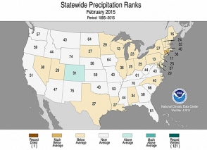
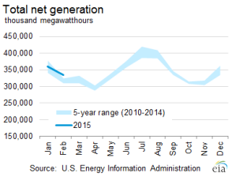
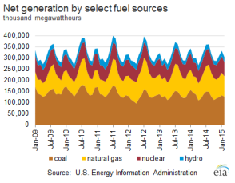
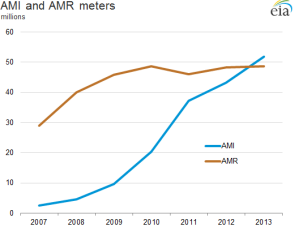
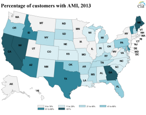
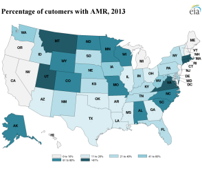

Electricity Monthly Update
With Data for February 2015 | Release Date: April 27, 2015 | Next Release Date: May 26, 2015
Previous Issues
Highlights: February 2015
- Extreme temperature variations were present from East to West across the country, with cold weather causing high demand levels in the East, while warm weather caused low demand levels in the West.
- The natural gas price for New York City (Transco Zone 6 NY) saw a significant increase in price from the previous month, going from $8.66/MMBtu in January 2015 to $15.40/MMBtu in February 2015.
- Hawaii's average revenues per kilowatthour has fallen over 20% since September, in conjunction with a large drop in world oil prices.
Key Indicators
| February 2015 | % Change from February 2014 | |
|---|---|---|
| Total Net Generation (Thousand MWh) |
334,851 | 3.3% |
| Residential Retail Price (cents/kWh) |
12.29 | 3.1% |
| Retail Sales (Thousand MWh) |
304,229 | -0.6% |
| Heating Degree-Days | 883 | 8.9% |
| Natural Gas Price, Henry Hub ($/MMBtu) |
2.91 | -51.7% |
| Natural Gas Consumption (Mcf) |
674,793 | 17.0% |
| Coal Consumption (Thousand Tons) |
67,181 | -11.9% |
| Coal Stocks (Thousand Tons) |
150,322 | 25.4% |
| Nuclear Generation (Thousand MWh) |
63,462 | 1.3% |



The number of electric smart meters operating in two-way mode has surpassed the number of one-way smart meters
 Source: U.S. Energy Information Administration, Annual Electric Power Industry Report (Form EIA-861)In 2013 for the first time, the number of electric meters operating as two-way smart meters surpassed the number of electric meters operating as one-way meters. One-way or AMR (automated meter reading) meters allow utilities to automatically read customers' meters for billing. Two-way or AMI (advanced metering infrastructure) meters allow utilities and customers to interact to support smart consumption applications. By the end of 2013, there were 51.9 million meters operating in AMI mode and 48.7 million meters operating in AMR mode. The number of meters in the U.S. operating as AMI meters increased by 8,759,319. The net gain in AMR meters was 405,716. Overall, 35.5 percent of all U.S. electrical customers have smart meters, which is a 20 percent increase over the 2012 penetration rate of 29.7 percent.
The deployment and use of AMI and AMR meters vary greatly by state. Only 5 states had an AMI penetration rate above 80 percent. High penetration rates are seen in northern New England, Western states, Georgia and Texas. California added the most AMI meters of any state in 2013 with 1.8 million new meters, an 18 percent increase over 2012.
There were 6 states with AMR penetration rates above 80 percent with Rhode Island the leader at 95 percent. The highest penetration rates are in the Rocky Mountain, Upper Plains and Southern Atlantic states. New York added nearly 540,000 AMR meters in 2013. Pennsylvania lost 580,000 AMR meters, but gained almost 620,000 AMI meters. It is likely that utilities switched many AMR meters to operate as AMI meters.
 Source: U.S. Energy Information Administration, Annual Electric Power Industry Report (Form EIA-861) Source: U.S. Energy Information Administration, Annual Electric Power Industry Report (Form EIA-861)
| Utility type | Total customers | AMI meters | AMR meters | AMI penetration rate (%) | AMR penetration rate (%) |
|---|---|---|---|---|---|
| Investor-owned | 106,477,972 | 38,856,749 | 34,517,067 | 36.5 | 32.4 |
| Cooperative | 18,881,923 | 8,564,797 | 7,774,317 | 45.4 | 41.2 |
| Municipality | 16,180,915 | 2,638,935 | 5,253,854 | 16.3 | 32.5 |
| Source: U.S. Energy Information Administration, Annual Electric Power Industry Report (Form EIA-861) | |||||
Among the three primary types of electric utilities, investor-owned utilities operate the most smart meters, both AMI and AMR. However, Cooperative utilities have higher smart meter penetration rates. For both of these types of utilities, AMI operated meters are leading AMR operated meters. For municipal utilities, the penetration rate for AMR meters is double that for AMI meters.
Principal Contributor:
Marc Harnish
(Marc.Harnish@eia.gov)
End Use: February 2015
Retail rates/prices and consumption
In this section, we look at what electricity costs and how much is purchased. Charges for retail electric service are based primarily on rates approved by state regulators. However, a number of states have allowed retail marketers to compete to serve customers and these competitive retail suppliers offer electricity at a market-based price.
EIA does not directly collect retail electricity rates or prices. However, using data collected on retail sales revenues and volumes, we calculate average retail revenues per kWh as a proxy for retail rates and prices. Retail sales volumes are presented as a proxy for end-use electricity consumption.
Average revenue per kWh by state
Average revenue per kilowatthour figures were up slightly on balance in February from one year ago and fairly evenly split between increasing and decreasing states. Twenty-seven states were higher than last February, with 23 states and the District of Columbia down year-over-year. Geographically, price movements were not consistent across regions as neighboring states' often ended up higher or lower than those around them. For instance, the top three states with the largest increases were all in New England, with Massachusetts up 17%, Rhode Island up 15% and Maine up just over 10%. However, Vermont fell over 2% and the second- and third-largest declining states were next door in New York, down over 8% and Pennsylvania, down almost 5%.
A consistent trend over the last five months has been the dramatic decline in average revenue per kilowatthour figures in Hawaii. Even though Hawaii is making a strong push towards increased renewable generation, energy efficiency and energy storage, the state remains strongly dependent on petroleum generation and thus, is sensitive to world oil prices. This makes the state a prime beneficiary of the fall in oil prices over the second half of 2014. Hawaii's average revenue per kilowatthour was 27.03 cents in February, down over 20% from 34.02 cents in September. Brent crude prices over the same period fell 40%, from a September average of $98.57 per barrel to $58.80 per barrel in February.
Total average revenues per kilowatthour were 10.39 cents in February, up 0.5% from last year. This marks the 27th straight month with year-over-year increases. The residential sector increased 3.1% from last year, the only one of the three major sectors showing a yearly increase. Commercial and industrial average revenue per sales numbers were down slightly from last year, -0.5% and -2.7%, respectively.
Retail sales volumes by sector were reversed relative to average revenues, with the residential sector down 3.3% and the commercial and industrial sectors up 0.9% and 2.2%, respectively.
Retail sales
In February, electric industry retail sales volumes closely mirrored weather patterns. Nearly every state higher than last year was located east of the Mississippi River. These states also all had significant increases in heating degree days compared to last year. West Virginia, Virginia and Maryland retail sales volumes increased the most this February, all up over 10%, and the top-11 states with increases were all located in the East. Conversely, most of the states that had lower retail sales volumes were located west of the Mississippi River, with those states having significantly less heating degree days than last February. Oregon declined the most, down 11%, followed closely by Washington, down 9% and Arizona, down 8%.
The heating degree day patterns driving retail sales volumes in February were a bit unique in its persistence and bifurcated uniformity. The states in the West remained much warmer than normal throughout the entire month and those states in the East remained much colder than normal throughout the entire month. This resulted in a heating degree day map deep shades of red in the west and deep shades of blue in the east, with states concentrated on both ends of the spectrum. Twenty-two states in the east and the District of Columbia had heating degree day increases greater than 15%, while seven states all in the far West had heating degree day decreases greater than 15%.
Resource Use: February 2015
Supply and fuel consumption
In this section, we look at the resources used to produce electricity. Generating units are chosen to run primarily on their operating costs, of which fuel costs account for the lion's share. Therefore, we present below, electricity generation output by fuel type and generator type. Since the generator/fuel mix of utilities varies significantly by region, we also present generation output by region.
Generation output by region

Net generation in the United States increased 3.3% compared to February 2014, as the more heavily populated eastern half of the country experienced significantly colder temperatures compared to last year. These colder temperatures led to an increased demand for heating compared to last February and as a result, electricity generation was up overall throughout the country. At the regional-level, all parts of the country, except for the West, saw increases in electricity generation compared to last year due to the colder temperatures. The West was the only region that saw a decrease in electricity generation compared to the previous February, as many states in the region experienced record warm temperatures during February 2015.
Electricity generation from coal decreased in all regions of the country compared to the previous year. The change in natural gas generation was slightly more mixed, with all parts of the country experiencing an increase in natural gas generation, except for the Northeast and West regions, which both saw decreases in electricity generation from natural gas. Normally priced out of the market for generating electricity, other fossil fuels, mainly oil, increased in all parts of the country mainly due to the significant drop in the price of oil. The Northeast saw the largest increase in electricity generation from other fossil fuels compared to the previous year, at the expense of both coal and natural gas generation.
In February 2015, electricity generation from conventional hydroelectric generators was up significantly in the West compared to last year. Unseasonably warm temperatures in the Pacific Northwest lead to more winter rain than snow fall and also early snow melt. The water fed the region's rivers with many hydroelectric dams. Generation from other renewable sources, mainly solar, increased in all parts of the country compared to February 2014, except for in Florida, where electricity generation from other renewables was mainly flat.
Fossil fuel consumption by region
The chart above compares coal consumption in February 2014 and February 2015 by region and shows that coal consumption for electricity generation has decreased in all regions of the country.
The second tab compares natural gas consumption by region. All regions of the country saw an increase in natural gas consumption, except for the Northeast and West, which saw decreases in natural gas consumption. This significant decrease in the West's natural gas consumption occurred because of the increased electricity generation coming from hydroelectric power plants in February 2015, thus displacing the need for natural gas consumption used for electricity generation. The decrease in natural gas consumption in the Northeast occurred because of the high demand for natural gas for heating and constraints on the natural gas pipeline capacity into the region. The scarcity of natural gas at times led to high prices leaving other fossil fuels, mainly oil, as the lower cost option for generation.
The third tab presents the change in the relative share of fossil fuel consumption by fuel type on a percentage basis, calculated using equivalent energy content (Btu). This highlights changes in the relative market shares of coal, natural gas, and petroleum. The West was the only part of the country that saw a slight increase in coal consumption at the expense of natural gas. The Northeast saw its shares of both coal and natural gas decrease at the expense of other fossil fuels, mainly oil. This occurred because the Northeast experienced much colder temperatures compared to the previous February and oil prices have dropped significantly compared to last year whereby it was economical to consume oil for electricity generation.
The fourth tab presents the change in coal and natural gas consumption on an energy content basis by region. The changes in total coal and natural gas consumption were very similar to the changes seen in total coal and natural gas net generation in each region.
Fossil fuel prices
To gain some insight into the changing pattern of consumption of fossil fuels over the past year, we look at relative monthly average fuel prices. A common way to compare fuel prices is on an equivalent $/MMBtu basis as shown in the chart above.
The monthly average price of natural gas at Henry Hub decreased from the previous month, going from $3.06/MMBtu in January 2015 to $2.91/MMBtu in February 2015. However, the natural gas price for New York City (Transco Zone 6 NY) saw a significant increase in price from the previous month, going from $8.66/MMBtu in January 2015 to $15.40/MMBtu in February 2015. This increase in New York City's natural gas price is often observed during this time of year when there is an increased demand for natural gas used for heating in an area of the country where the natural gas pipeline infrastructure is subject to significant congestion.
For the first time in six months, the New York Harbor residual oil price increased from the previous month, going from $9.47/MMBtu in January 2015 to $11.04/MMBtu in February 2015. However, because of the cold temperatures experienced in the Northeast during February 2015 and the relatively low price of oil and high price of natural gas, it was economical to use oil as a fuel for electricity generation in the region during the month.
A fuel price comparison based on equivalent energy content ($/MMBtu) does not reflect differences in energy conversion efficiency (heat rate) among different types of generators. Gas-fired combined-cycle units tend to be more efficient than coal-fired steam units. The second tab shows coal and natural gas prices on an equivalent energy content and efficiency basis. For the second consecutive month, the price of natural gas at Henry Hub was below the price of Central Appalachian coal on a $/MWh basis. This occurred due to the decrease in the Henry Hub price beginning in December 2014. However, the spread between the New York City gas price and the price of Central Appalachian coal increased considerably due to the significant increase in New York City's gas price from the previous month.
The conversion shown in this chart is done for illustrative purposes only. The competition between coal and natural gas to produce electricity is more complex. It involves delivered prices and emission costs, the terms of fuel supply contracts and the workings of fuel markets.
Regional Wholesale Markets: February 2015
The United States has many regional wholesale electricity markets. Below we look at monthly and annual ranges of on-peak, daily wholesale prices at selected pricing locations and daily peak demand for selected electricity systems in the Nation. The range of daily prices and demand data is shown for the report month and for the year ending with the report month.
Prices and demand are shown for six Regional Transmission Operator (RTO) markets: ISO New England (ISO-NE), New York ISO (NYISO), PJM Interconnection (PJM), Midwest ISO (MISO), Electric Reliability Council of Texas (ERCOT), and two locations in the California ISO (CAISO). Also shown are wholesale prices at trading hubs in Louisiana (into Entergy), Southwest (Palo Verde) and Northwest (Mid-Columbia). In addition to the RTO systems, peak demand is also shown for the Southern Company, Progress Florida, Tucson Electric, and the Bonneville Power Authority (BPA). Refer to the map tabs for the locations of the electricity and natural gas pricing hubs and the electric systems for which peak demand ranges are shown.
In the second tab immediately below, we show monthly and annual ranges of on-peak, daily wholesale natural gas prices at selected pricing locations in the United States. The range of daily natural gas prices is shown for the same month and year as the electricity price range chart. Wholesale electricity prices are closely tied to wholesale natural gas prices in all but the center of the country. Therefore, one can often explain current wholesale electricity prices by looking at what is happening with natural gas prices.
Wholesale prices

Wholesale natural gas and electricity market prices reflected an extremely bifurcated weather pattern during the month of February. In the eastern U.S., extremely high prices resulted from the coldest February on record for many cities. On February 20th in particular, single day low temperature records for either that day or for all of February were set in cities in every state east of the Mississippi River except in Maine. For the month, wholesale electricity prices reached $279/MWh in the Mid-Atlantic (PJM), $223/MWh in New York City (NYISO) and $211/MWh in New England (ISONE). Wholesale natural gas prices in these areas were also very high, reaching $21/MMBtu in the Mid-Atlantic (Tetco M-3), $35/MMBtu in New York City (Transco Z6 NY) and $29/MMBtu in New England (Algonquin).
On the other end of the weather spectrum, wholesale prices were low as a result of one of the warmest February's on record across much of the West. Wholesale electricity prices reached only $36/MWh in Northern California (CAISO), $34/MWh in Southern CA (CAISO), $28/MWh in the Southwest (Palo Verde) and $26/MWh in the Northwest (Mid-C). Wholesale natural gas prices in these areas reached $3.22/MMBtu in Northern California (PG&E Citygate), $3.07/MMBtu in Southern California (SoCal Border), $3.06 in the Southwest (El Paso San Juan) and $2.70/MMBtu in the Northwest (Sumas).
Electricity system daily peak demand

{kind=link}
{kind=link}
{kind=link}
{kind=link}
{kind=link}
{kind=link}
{kind=link}
{kind=link}
{kind=link}
Daily peak electricity system demand varied widely by region in February, due to disparate weather conditions and unique regional characteristics. In the Northeast, the brutally cold weather did not have a large impact on electricity demand as the majority of heating systems in these areas are fueled from natural gas, petroleum liquids, and wood sources. Peak demand in New England (ISONE) and New York State (NYISO) reached just over 70% of their respective all-time highs and were not even near peak load levels over the last 12 months.
However, in the Mid-Atlantic and Southeast, the weather had a bigger effect as there is a much larger prevalence of electric heating systems in these areas and extremely high demand levels often occur on cold winter mornings. In the Mid-Atlantic, PJM set a new all-time winter peak demand record just over 143 GW on February 20 and in the Southeast, Southern Company reached 80% of its all-time maximum and Progress Florida set a new 12-month maximum demand level and was 89% of its all-time demand record during the month.
Through much of the West, record warmth lead to long stretches of "Goldilocks" weather, not too hot and not too cold that leads to minimal heating or cooling demand. High temperatures in Tucson averaged 72 degrees for the month, 74 degrees in Los Angeles and 66 degrees in San Francisco, leading to very low electricity demand levels in California (CAISO) and Tucson Electric.
Electric Power Sector Coal Stocks: February 2015
In February, U.S. coal stockpiles fell to 150 million tons, down 3% from the previous month. Declining coal stockpiles are a normal pattern most years from January to February as coal-fired generators meet winter electricity demand. The month-to-month stockpile change differed by coal type and reflected the large weather variance between the eastern and western U.S. Bituminous coal stocks, largely burned in eastern power plants, fell 8% in February as nearly every state in this region experienced one of its coldest Februarys on record. Subbituminous coal stocks, largely (but not entirely) burned in western power plants, actually increased during the month as most states there experienced one of their warmest February's on record. Total stockpiles this year are significantly higher (25%) than last February, when a combination of high electricity demand and limited coal deliveries caused a large drawdown in coal stockpiles. The stockpile levels at a handful of plants in the Midwest last winter off of the Burlington Northern Santa Fe railroad dropped to just a few days of burn. This problem seems to have been resolved this winter, as conservative operating plans and higher levels of coal deliveries by BNSF has restored stocks at those plants to more normal levels.
Days of burn
The average number of days of burn held at electric power plants is a forward looking estimate of coal supply given a power plant's current stockpile and past consumption patterns. Days of burn patterns differed widely between bituminous and subbituminous units during the month of February. For bituminous units largely located in the eastern U.S., extremely cold weather caused a decline from 81 days to 79 days of forward looking days of burn estimates. For subbituminous units largely located in the western U.S., extremely warm weather contributed to a sharp increase in forward looking days of burn estimates, from 69 days of burn in January to 77 days in February. The percentage of bituminous and subbituminous coal-fired capacity having less than 30 days of burn increased slightly in February to 7.5% from 4% in January. This is a much lower percentage than last February, however, when over 21% of units had less than 30 days of burn.
Coal stocks and average number of days of burn for non-lignite coal by region (electric power sector)
| February 2015 | February 2014 | January 2015 | ||||||||
|---|---|---|---|---|---|---|---|---|---|---|
| Zone | Coal | Stocks (1000 tons) | Days of Burn | Stocks (1000 tons) | Days of Burn | % Change of Stocks | Stocks (1000 tons) | Days of Burn | % Change of Stocks | |
| Northeast | Bituminous | 6,005 | 85 | 4,074 | 61 | 47.4% | 7,049 | 91 | -14.8% | |
| Subbituminous | 742 | 259 | 245 | 94 | 202.8% | 779 | 203 | -4.7% | ||
| South | Bituminous | 30,245 | 81 | 28,305 | 74 | 6.9% | 33,064 | 85 | -8.5% | |
| Subbituminous | 5,941 | 80 | 4,215 | 52 | 41.0% | 6,184 | 82 | -3.9% | ||
| Midwest | Bituminous | 13,369 | 73 | 9,133 | 49 | 46.4% | 14,363 | 73 | -6.9% | |
| Subbituminous | 33,125 | 65 | 26,082 | 49 | 27.0% | 33,409 | 57 | -0.8% | ||
| West | Bituminous | 5,634 | 75 | 5,612 | 76 | 0.4% | 5,349 | 70 | 5.3% | |
| Subbituminous | 31,056 | 91 | 22,059 | 66 | 40.8% | 28,839 | 82 | 7.7% | ||
| U.S. Total | Bituminous | 55,253 | 79 | 47,124 | 67 | 17.3% | 59,824 | 81 | -7.6% | |
| Subbituminous | 70,864 | 77 | 52,601 | 56 | 34.7% | 69,210 | 69 | 2.4% | ||
Source: U.S. Energy Information Administration
NOTE: Stockpile levels shown above reflect a sample of electric power sector plants, which were used to create the days of burn statistics. These levels will not equal total electric power sector stockpile levels.
Methodology and Documentation
General
The Electricity Monthly Update is prepared by the Electric Power Operations Team, Office of Electricity, Renewables and Uranium Statistics, U.S. Energy Information Administration (EIA), U.S. Department of Energy. Data published in the Electricity Monthly Update are compiled from the following sources: U.S. Energy Information Administration, Form EIA-826,“Monthly Electric Utility Sales and Revenues with State Distributions Report,” U.S. Energy Information Administration, Form EIA-923, "Power Plant Operations Report," fuel spot prices from Bloomberg Energy, electric power prices from SNL Energy, electric system demand data from Ventyx Energy Velocity Suite, and weather data and imagery from the National Oceanic and Atmospheric Administration.
The survey data are collected monthly using multiple-attribute cutoff sampling of power plants and electric retailers for the purpose of estimation for various data elements (generation, stocks, revenue, etc.), for various categories, such as geographic regions. (The data elements and categories are “attributes.”) The nominal sample sizes are: for the Form EIA-826, approximately 450 electric utilities and other energy service providers; for the Form EIA-923, approximately 1900 plants. Regression-based (i.e., “prediction”) methodologies are used to estimate totals from the sample. Essentially complete samples are collected for the Electric Power Monthly (EPM), which includes State-level values. The Electricity Monthly Update is based on an incomplete sample and includes only regional estimates and ranges for state values where applicable. Using ‘prediction,’ it is generally possible to make estimates based on the incomplete EPM sample, and still estimate variances.
For complete documentation on EIA monthly electric data collection and estimation, see the Technical Notes to the Electric Power Monthly. Values displayed in the Electric Monthly Update may differ from values published in the Electric Power Monthly due to the additional data collection and data revisions that may occur between the releases of these two publications.
Accessing the data: The data included in most graphics can be downloaded via the "Download the data" icon above the navigation pane.Some missing data is proprietary and non-public.
Key Indicators
The Key Indicators table, located in the "Highlights" section, are defined below. The current month column includes data for the current month at a national level. The units vary by statistic, but are included in the table. The "% Change from 2010" value is the current month divided by the corresponding month last year (e.g. July 2011 divided by July 2010). This is true for Total Generation, Residential Retail Price, Retail Sales, Cooling Degree Days, Coal Stocks, Coal and Natural Gas Consumption. The Henry Hub current month value is the average weekday price for the current month. The Henry Hub "% Change from 2010" value is the average weekday price of the same month from 2010 divided by the average weekday price of the current month.
Total Net Generation: Reflects the total electric net generation for all reporting sectors as collected via the Form EIA-923.
Residential Retail Price: Reflects the average retail price as collected via the Form EIA-826.
Retail Sales: Reflects the reported volume of electricity delivered as collected via the Form EIA-826.
Cooling Degree Days: Reflects the total population weighted U.S. degree days as reported by the National Oceanic and Atmospheric Administration.
Natural Gas Henry Hub: Reflects the average price of natural gas at Henry Hub for the month. This data is provided by Bloomberg.
Coal Stocks: Reflects the total coal stocks for the Electric Power Sector as collected via the Form EIA-923.
Coal Consumption: Reflects the total coal consumption as collected via the Form EIA-923.
Natural Gas Consumption: Reflects the total natural gas consumption as collected via the Form EIA-923.
Nuclear Outages: Reflects the average daily outage amount for the month as reported by the Nuclear Regulatory Commission's Power Reactor Status Report and the latest net summer capacity data collected on the EIA-860 Annual Generator Report.
Sector Definitions
The Electric Power Sector comprises electricity-only and combined heat and power (CHP) plants within the North American Industrial Classification System 22 category whose primary business is to sell electricity, or electricity and heat, to the public (i.e., electric utility plants and Independent Power Producers (IPP), including IPP plants that operate as CHP). The All Sectors totals include the Electric Power Sector and the Commercial and Industrial sectors (Commercial and Industrial power producers are primarily CHP plants).
Degree Days
Degree-days are relative measurements of outdoor air temperature used as an index for heating and cooling energy requirements. Heating degree-days are the number of degrees that the daily average temperature falls below 65° F. Cooling degree-days are the number of degrees that the daily average temperature rises above 65° F. The daily average temperature is the mean of the maximum and minimum temperatures in a 24-hour period. For example, a weather station recording an average daily temperature of 40° F would report 25 heating degree-days for that day (and 0 cooling degree-days). If a weather station recorded an average daily temperature of 78° F, cooling degree-days for that station would be 13 (and 0 heating degree days).
Per Capita Retail Sales
The per capita retail sales statistics use 2011 population estimates from the U.S. Census Bureau and monthly data collected by the Energy Information Administration. The volume of electricity delivered to end users for all sectors in kilowatthours is divided by the 2011 population estimate for each state.
Composition of Fuel Categories
Net generation statistics are grouped according to regions (see Electricity Monthly Update Explained Section) by generator type and fuel type. Generator type categories include:
Fossil Steam: Steam turbines powered by the combustion of fossil fuels
Combined Cycle: Combined cycle generation powered by natural gas, petroluem, landfill gas, or other miscellaneous energy sources
Other Fossil: Simple cycle gas turbines, internal combusion turbines and other fossil powered technology
Nuclear Steam: Steam turbines at operating nuclear power plants
Hydroelectric: Conventional hydroelectric turbines
Wind: Wind turbines
Other renewables: All other generation from renewable sources such as geothermal, solar, or biomass
Other: Any other generation technology, including hydroelectric pumped storage
Generation statistics are also displayed by fuel type. These include:
Coal: all generation associated with the consumption of coal
Natural Gas: all generation associated with the consumption of natural gas
Nuclear: all generation associated with nuclear power plants
Hydroelectric: all generation associated with conventional hydroelectric turbines
Other Renewable: all generation associated with wind, solar, biomass, and geothermal energy sources
Other Fossil: all generation associated with petroleum products and fossil-dervied fuels
Other: all other energy sources including waste heat, hydroelectric pumped storage, other reported sources
Relative Fossil Fuel Prices
Relative fossil fuel prices are daily averages of fossil fuel prices by month, displayed in dollars per million British thermal unit as well as adjusted for operating efficiency at electric power plants to convert to dollars per megawatthour. Average national heat rates for typical operating units for 2010 were used to convert relative fossil fuel prices.
Average Days of Burn
Average Days of Burn is defined as the average number of days remaining until coal stocks reach zero if no further deliveries of coal are made. These data have been calculated using only the population of coal plants present in the monthly Form EIA-923. This includes 1) coal plants that have generators with a primary fuel of bituminous coal (including anthracite) or subbituminous, and 2) are in the Electric Power Sector (as defined in the above "Sector definitions"). Excluded are plants with primary fuel of lignite and waste coal, mine mouth plants, and out of service plants. Coal storage terminals and the related plants that they serve are aggregated into one entity for the calculation of Average Days of Burn, as are plants that share stockpiles.
Average days of burn is computed as follows: End of month stocks for the current (data) month, divided by the average burn per day. Average burn per day is the average of the three previous years’ consumption as reported on the Form EIA-923.
These data are displayed by coal rank and by zone. Each zone has been formed by combining the following Census Divisions:
- "Northeast" — New England, Middle Atlantic
- "South" — South Atlantic, East South Central
- "Midwest" — West North Central, East North Central
- "West" — Mountain, West South Central, Pacific Contiguous
Coal Stocks vs. Days of Burn Stocks
The coal stocks data presented at the top of the Fossil Fuel Stocks section (“Coal Stocks”) will differ from the coal stocks presented in the Days of Burn section (“DOB Stocks”) at the bottom of the Fossil Fuel Stocks section. This occurs because Coal Stocks include the entire population of coal plants that report on both the annual and monthly Form EIA-923. The DOB Stocks only include coal plants that report on the monthly Form EIA-923 and have a primary fuel of bituminous (including anthracite) or subbituminous as reported on the Form EIA-860.